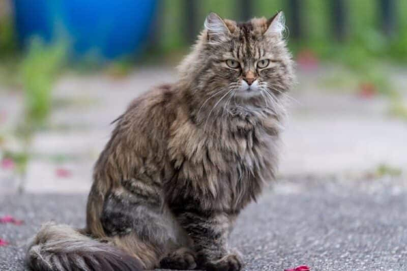

Ogólny zarys rasy Ragamuffin:
- Pochodzenie: Rasa została stworzona w latach 90. XX wieku poprzez krzyżowanie kotów Ragdoll z innymi rasami, takimi jak perskie czy himalajskie.
- Wygląd: Raggamuffiny są dużymi, mocno zbudowanymi kotami o okrągłych głowach, pełnych policzkach i dużych oczach. Ich sierść jest długa, gęsta i miękka, a najczęściej występują w różnych kolorach i wzorach.
- Temperament: Raggamuffiny są znane z łagodnego i przyjaznego usposobienia. Są to koty towarzyskie, uwielbiają kontakt z ludźmi i często są opisywane jako "kocie psy", ponieważ mogą być bardzo przywiązane do swoich właścicieli.
Dowiedz się więcej o tej rasie!
